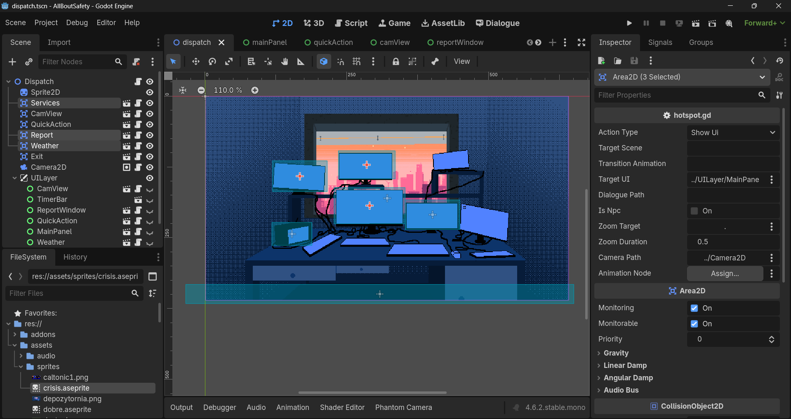

All About Safety
Jest to symulator dyspozytorni 112 napędzany narracją oraz dynamicznymi wydarzeniami. Twoim zadaniem jest ratowanie ludzi, podejmowanie ciężkich i szybkich wyborów.
Główne funkcjonalności:
- System scenariuszy z interaktywnymi systemami dialogów
- Rozbudowana fabuła oraz wiele zakończeń
- Wysyłanie służb ratunkowych oraz alertów
- System trójfazowy zmieniający oprawę audiowizualną w oparciu o sytuację gracza